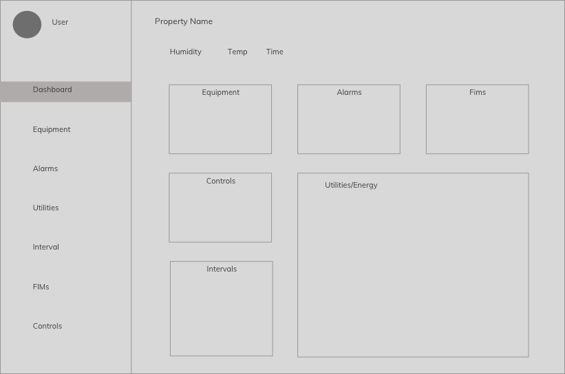
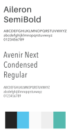

Commercial Real Estate Website
POSITION
WEB DESIGNER
TOOLS & SKILLS USED
SKETCH - INVISION - DGLUX5
PROJECT OVERVIEW
Controlco was contracted to create an interface for major commercial real estate company. This client is one of the largest real estate corporations in the world, owning over 200 properties internationally. Our goal was to give the client a way to access their buildings' operational settings to view historical data and to enter new data.

CHALLENGES
As the lead of this project, I was challenged with having to come up with a website design that will not only effectively allow users to view their system innerworkings, but to also allow them to create data. To start, the client had given me a barebones mock-up of what they had in mind. However, what they had laid out were the visual aspects of how they wanted the website to look but didn't actually give me any details on how users would interact with each element. Besides questions about their accounting terminology, I had a few other questions to ask:
"Who will be using this website? What are they trying to accomplish when they log in? How many properties need to be integrated? What type of data will they be entering?"
The most difficult segment of this assignment was trying to delve into our client's minds to figure out how they envisioned the flow of the website. After a long meeting with the clients and a few other stakeholders, I was able to come up with a concept.

Instead of drawing wireframes of blank tables for each page, I took some notes to help me conceptualize what each page should look like and how users will interact with them.
Dashboard: As the homepage, users can see quick data regarding each parameter, including charts for intervals and energy. Clicking further into each box will allow users to visit those links. Users will not be able to edit anything on this page.
Equipment: This page will be in a spreadsheet format. Users can enter quantitative data in this region.
Alarms: The total alarms will be shown on this page. The alarm console will let users sort and filter through different alarms. Users will not be able to edit anything on this page.
Utilities: This page serves as a visualization of the building's historical data. Users can click different values to plot such as kWh, kW, HDD, and $/RSF. They will also be able to toggle between period lengths like hours or weeks. Users will not be able to edit anything on this page.
Interval: Like the utilities, this page will also allow users to plot values and view trends. Users will not be able to edit anything on this page.
FIMs: This page shows the project summaries and can be edited by users. Project costs, statuses, budgets and other important information can be seen here.
Controls: Different quantitative data and values can be adjusted here. Users can even type notes in the comments section. The clients want this spreadsheet to be color-coded according to their conventions.
THE LOOK AND FEEL
After working out the kinks of user interaction, the next step was to work on the visual interface. The intended audience of the website are mainly administrative workers who feel very comfortable working in Excel, so it made sense why they wanted their data to be in tables.
What type of font and colors should I use in order to optimize the flow of the site?
My solution: use sans serif fonts and maintain a lot of white space. The thing about working in the data visualization industry is that users tend to want to see a lot of data. By using a lot of white space, it lets user focus easily gravitate to whats in color, which in this case, is the data. To remove extra noise when glancing at numbers in tables, I decided to go with a sans serif font to make everything much more legible.

My decisions were pitched to the team, including the clients themselves. In this profession, I was fortunate enough to be able to work directly with the stakeholders to gain their feedback immediately. They liked the color scheme and type, so I continued to tackle the rest of the website design. The global navigation is a vertical side bar to the left. The design is fully responsive, but is still meant to be viewed from the desktop since the graphs and tables can only scale so much. The final design was revealed to the clients through an InVision prototype.

RESULTS
The design was positively conceived by everyone: the clients, the data modelers, the UI team, and by the VP himself. Because of my concept, we were commissioned to dozens of more properties in this client's portfolio. The design was going to be used as a template for all their properties.